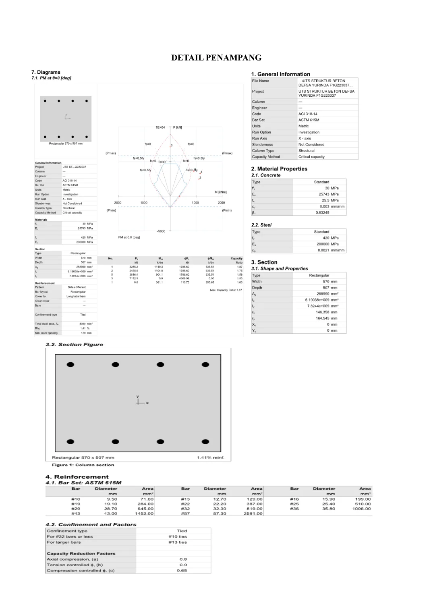

Mode keruntuhan kolom dan diagram interaksi P–M
Menjelaskan mode keruntuhan kolom beton bertulang (tekan murni, tekan menentukan, seimbang, tarik menentukan, tekuk) beserta pemicu dan mitigasinya, lalu memeriksa kolom dengan diagram interaksi P–M dari spColumn.
- Acara atau tempat
- Tugas besar Struktur Beton II, Universitas Jambi
- Tahun
- 2025
- Peran saya
- Penyusun.
- Hasil
- Analisis kolom dengan spColumn
- Perangkat lunak
- spColumn, Microsoft Excel
- Jenis
- Perhitungan, Pemodelan
Keluaran spColumn


